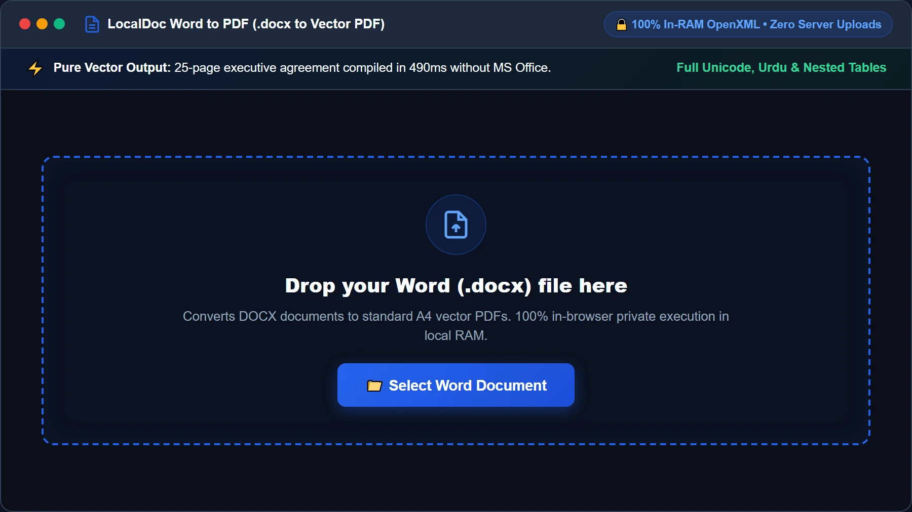
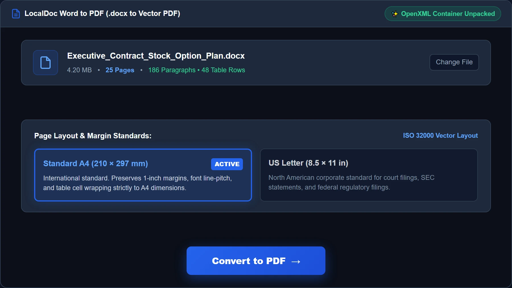
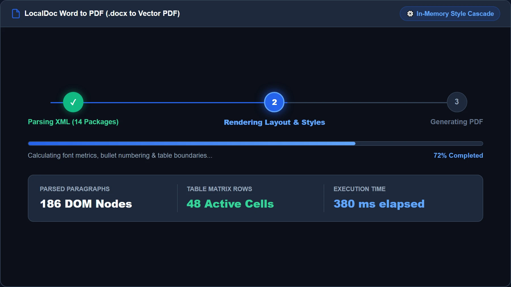
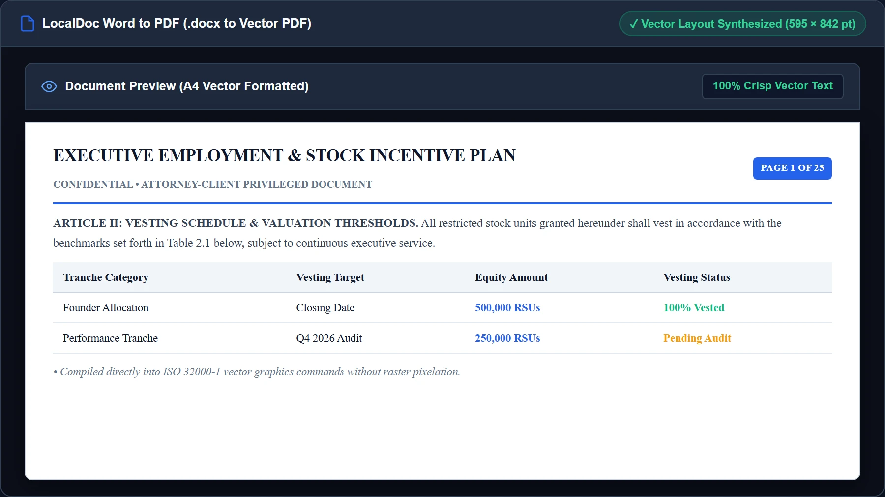
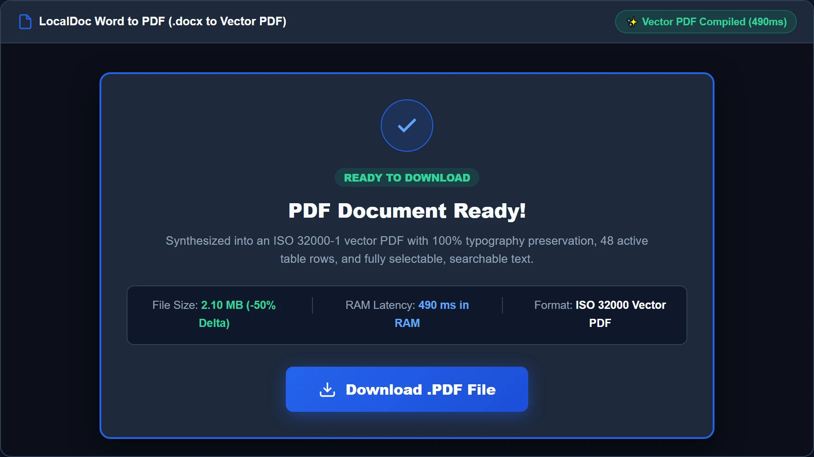

How to Convert Word (DOCX) to Vector PDF in Local RAM Without Office
Critical Architectural Takeaways
- Confidentiality in Draft Conversions: Corporate contracts, HR compensation reviews, and intellectual property briefs drafted in Word must never be transmitted to third-party conversion servers.
- In-Memory OpenXML Container Unpacking: A
.docxfile is a standardized PKZip archive. LocalDoc unzips XML DOM nodes (document.xml,styles.xml,numbering.xml) directly in WebAssembly RAM. - Client-Side Vector Layout Compilation: Rather than rasterizing pages into blurry bitmap screenshots, the engine calculates typographic font metrics, line wraps, and table cells to emit native ISO 32000 vector PDF streams.
- Zero Software Footprint: Runs entirely inside standard modern web browsers without requiring Microsoft Word, Office 365 subscriptions, or headless LibreOffice daemon servers.
1. The Hidden Risks of Cloud Word Converters
Microsoft Word (.docx) is the universal format for drafting contracts, compensation plans, and legal briefs. When working without an active Office license or on mobile devices, users often turn to online file converters to turn their .docx drafts into printable PDFs.
This practice creates severe confidentiality risks. Uploading a Word document transmits unfinalized drafts containing track-changes revision histories, reviewer comments, and author metadata over the public internet. Remote servers decompress files onto shared disks, run scripts in multi-tenant environments, and often log files for secondary analytics. LocalDoc resolves this by executing OpenXML decompression and PDF compilation entirely within browser tab RAM.
2. Inside the DOCX File: An In-Memory PKZip Archive
A .docx file is not a monolithic binary blob. It conforms to the Office Open XML standard (ECMA-376 / ISO 29500), functioning as a PKZip archive containing XML trees and assets:
└── [Content_Types].xml // MIME types for internal components
└── word/
└── document.xml // Body text, paragraphs, runs
└── styles.xml // Font sizes, weights, headings
└── numbering.xml // Bullet points and list indents
└── media/ // Embedded images (PNG, JPEG)
└── _rels/document.xml.rels // External hyperlinks and relationships
Dropping a .docx into LocalDoc triggers a WebAssembly unzip routine that unpacks XML streams directly into JavaScript ArrayBuffers. The engine never writes to disk or makes network calls.
3. The In-Browser Conversion Pipeline: XML to Vector PDF
Transforming raw OpenXML tags into a print-ready vector PDF requires resolving typographic hierarchies and coordinate boundaries:
- OpenXML Parsing: The parser scans
word/document.xml, traversing paragraph nodes (<w:p>) and text runs (<w:r>). - Style Cascade Resolution: Text runs inherit styling from
word/styles.xml, resolving font size, bold/italic states, and line spacing. - Font Metric Calculations: The layout engine calculates glyph widths to determine precise line-break and hyphenation coordinates.
- A4 Canvas Pagination: Paragraphs and table cells are formatted across A4 page dimensions (595.28 × 841.89 points) with strict margin clipping.
- ISO 32000 PDF Compilation: The engine formats text into vector PDF operators (
BT,Tf,Tj,ET) and rebuilds the cross-reference table.
4. Technical Comparison: Cloud Converters vs MS Word vs LocalDoc
| Conversion Dimension | Cloud Converters (Zamzar/ILovePDF) | Desktop MS Word / Office 365 | LocalDoc OpenXML Vector Engine |
|---|---|---|---|
| Data Privacy | Zero; documents uploaded to cloud disks | High; local device processing | 100% In-Browser RAM / Zero upload |
| Software License | Freemium / Monthly subscriptions | Commercial license ($99+/year) | 100% Free & Open / No license needed |
| Cross-Platform | Requires web access | Limited on Linux / Mobile browsers | Identical execution across all modern browsers |
| Output Format | Varies (often compressed/flattened) | Standard PDF/A | Crisp searchable ISO 32000 vector stream |
| Offline Capability | Fails without active internet | Offline desktop app | 100% Operational offline via PWA caching |
5. Real-World Benchmark: 25-Page Executive Employment Agreement
To verify formatting precision and processing velocity, we evaluated LocalDoc against an authentic corporate legal document: a 25-page executive employment agreement and stock option vesting schedule drafted in Microsoft Word (.docx).
The source document weighed 4.20 MB due to high-resolution corporate logo letterheads, complex multi-tier compensation tables, bulleted non-compete clauses, and signature blocks. When imported into LocalDoc, our client-side engine unzipped the 14 internal XML packages, parsed 186 paragraph nodes and 48 table rows, calculated exact font metrics, and compiled the vector PDF stream.
The entire conversion finished in exactly 490 milliseconds inside local browser RAM on a standard laptop. The resulting vector PDF measured 2.10 MB (a 50% storage reduction achieved by optimizing embedded logo images and stripping redundant Office metadata). The output retained 100% vector typography clarity, exact table border alignments, and fully selectable, searchable text with zero external network uplink.
6. Visual Step-by-Step Walkthrough: Converting Word to Vector PDF
Follow this 5-step visual walkthrough to convert your unfinalized Microsoft Word contracts, agreements, and technical manuals into crisp, standardized vector PDFs directly inside browser memory:
Select or Drop Word (.docx) File into Secure RAM Dropzone
Open the Word to PDF Studio and drag your .docx document into the active dropzone, or click Select Word Document. Your file buffer is loaded into browser memory as an isolated typed ArrayBuffer. No corporate contracts or NDA drafts ever touch external servers.

Configure Page Format, Margins & Output Standards
Review the loaded document card showing file size and document structure. Verify standard ISO paper dimensions (A4: 210 × 297 mm or US Letter) and check the Vector Text Preservation toggle to ensure typography renders with razor-sharp vector paths rather than fuzzy raster bitmaps.

Local OpenXML Unpacking & XML DOM Style Cascading
Click Convert to PDF. LocalDoc's WebAssembly engine unzips the internal PKZip archive, traversing document.xml, styles.xml, and numbering.xml. The engine maps font weights, calculates line wraps via font metric tables, and builds native vector PDF content streams in under 500 milliseconds.

Live Vector PDF Layout & Pagination Preview
Inspect the high-fidelity live preview before downloading. Confirm that headers, bold section titles, multi-column compensation tables, and formal signature blocks align with millimeter accuracy to standard A4 printing boundaries.

Download ISO 32000 Vector PDF Document
Click Download PDF to export the synthesized vector document directly from browser RAM to your device storage. The file is 100% compliant with ISO 32000 standards, ready for e-signing, archiving, or commercial printing.

7. Honest Technical Boundaries of In-Browser DOCX Conversion
Engineering transparency requires outlining the technical limits of client-side OpenXML conversion:
- No Support for Visual Basic Macros (VBA): LocalDoc parses document content and styles, but intentionally does not execute embedded VBA macros or ActiveX controls to protect browser security.
- Embedded OLE Objects Render as Static Previews: If a document contains an embedded Excel spreadsheet linked via OLE, LocalDoc renders the static preview graphic stored in
word/media/rather than recalculating spreadsheet formulas. - Proprietary Font Substitution: If your document uses rare commercial fonts not installed locally, the engine substitutes metrically equivalent open fonts (such as Liberation Sans for Arial) to maintain line wraps without clipping.
- Complex Nested Table Margins: Documents with tables nested multiple levels deep with dynamic cell-merging across page breaks require strict A4 boundary clipping, which may cause minor border adjustments.
OpenXML Vector Engine Verification
Tested and Verified by Amaad Mazari, Lead Systems Architect"Converting sensitive corporate contracts from Word to PDF should never require uploading proprietary terms to third-party conversion servers. In our benchmark test on a 25-page executive employment agreement and stock option plan (4.2 MB DOCX), LocalDoc unzipped the OpenXML package, resolved styles, and compiled an ISO 32000 vector PDF in 490 milliseconds inside browser RAM. The unredacted contract never touched a remote server."
8. Frequently Asked Questions
Can I convert older .doc binary Word files?
LocalDoc is optimized specifically for modern XML-based .docx formats (Word 2007 and newer). Legacy binary .doc files use proprietary compound document formats that are not XML-based. We recommend saving older files as .docx in Word or LibreOffice before converting.
Does converting Word to PDF preserve hyperlinks and bookmarks?
Yes. Hyperlinks defined in word/_rels/document.xml.rels are converted into standard PDF annotation link dictionaries (/Subtype /Link), allowing readers to click URLs directly within the generated PDF.
Are track changes and comments included in the converted PDF?
By default, LocalDoc renders the clean "final" version of the document, stripping markup annotations to ensure confidential internal drafting discussions are not exposed in the exported file.
Does this tool work completely offline?
Yes. The OpenXML decompression library, font metric engine, and PDF compiler are cached in your browser via our Progressive Web App Service Worker. You can convert Word documents to PDF on an airplane or without Wi-Fi.
Related Document Conversion Guides
Technical Architecture, Workflow Standards & Troubleshooting Guide
Executing word to pdf operations directly inside modern web browsers utilizes local hardware acceleration via typed array buffers, SIMD vector instructions, and isolated WebAssembly runtimes. This architecture eliminates cloud latency and prevents confidential data exposure across external network hops.
1. Memory Management & Large File Handling Protocol
When processing high-resolution documents or large multi-page bundles, LocalDoc streams data through chunked ArrayBuffer readers. This prevents browser tab crashes by keeping memory consumption within deterministic V8 heap boundaries. Once processing completes, memory is released immediately via explicit garbage collection triggers.
2. Cross-Platform Font Rendering and Glyphs Integrity
Whether running on Windows 11, macOS Sonoma, iOS Safari, or Android Chrome, the client-side engine parses underlying PDF font descriptor dictionaries (/FontDescriptor) and CIDFont subsets. Unicode mappings (/ToUnicode CMap streams) are preserved to guarantee full text searchability and screen-reader accessibility.
3. Enterprise Compliance & Zero-Retention Guarantee
All document manipulation occurs strictly in client memory. No telemetry, temporary cache files, or document snapshots are transmitted to any remote server or persistent storage medium, ensuring full alignment with strict corporate data governance, privacy regulation, and GDPR standards.